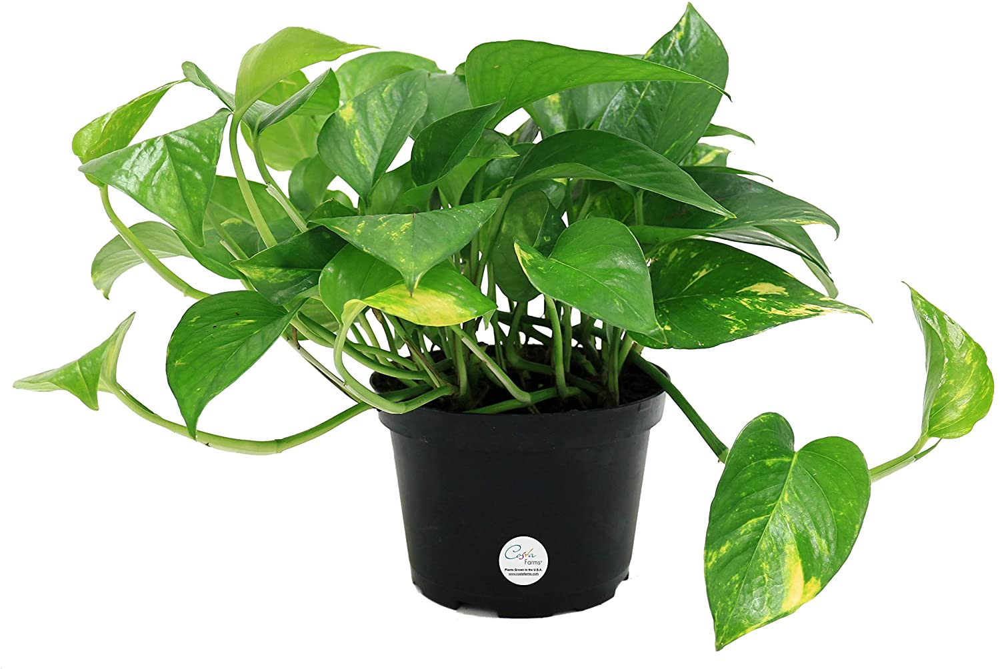
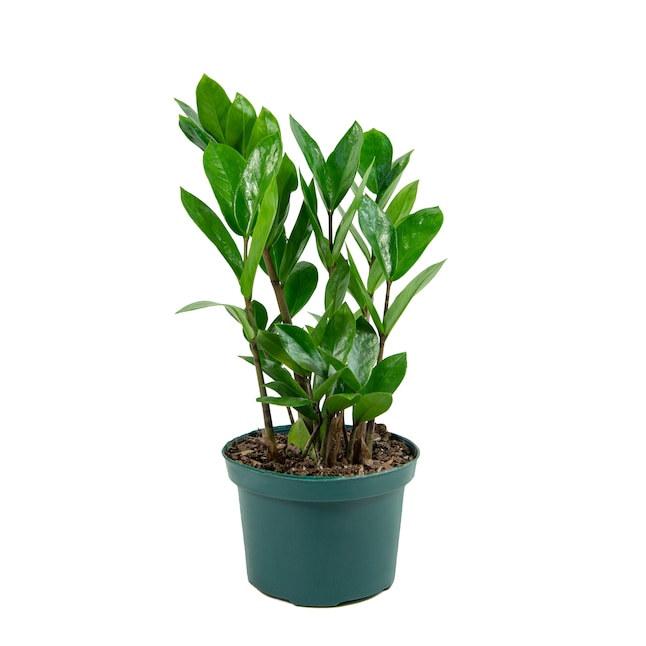

this weeks featured plants
strings of hearts (ceropegia woodii)
- Care: Prefers bright indirect light
- Water consistantly
- Requires warm temperatures
- Add Fertilizer to encourage flower growth
- Give them space to grow
- Propegation: Trim plant under the nodule
- Place the tuber in the soil
- Keep the soil moist

